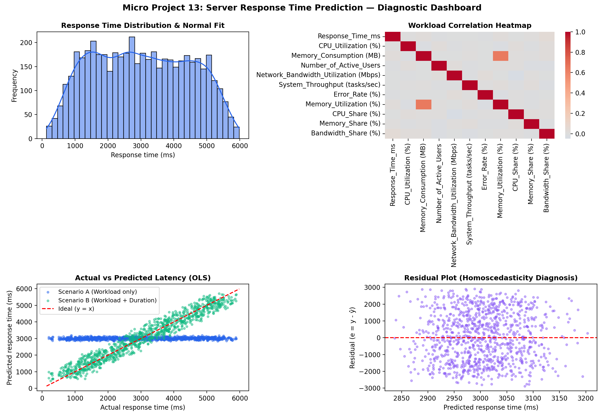
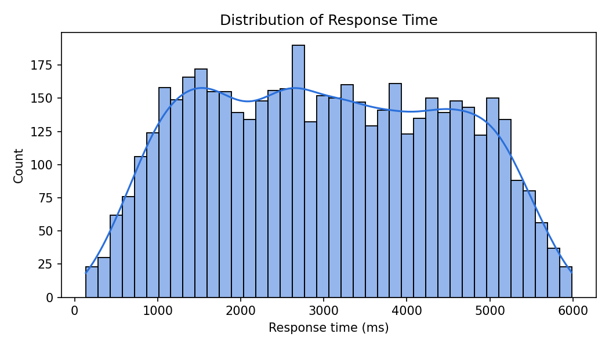
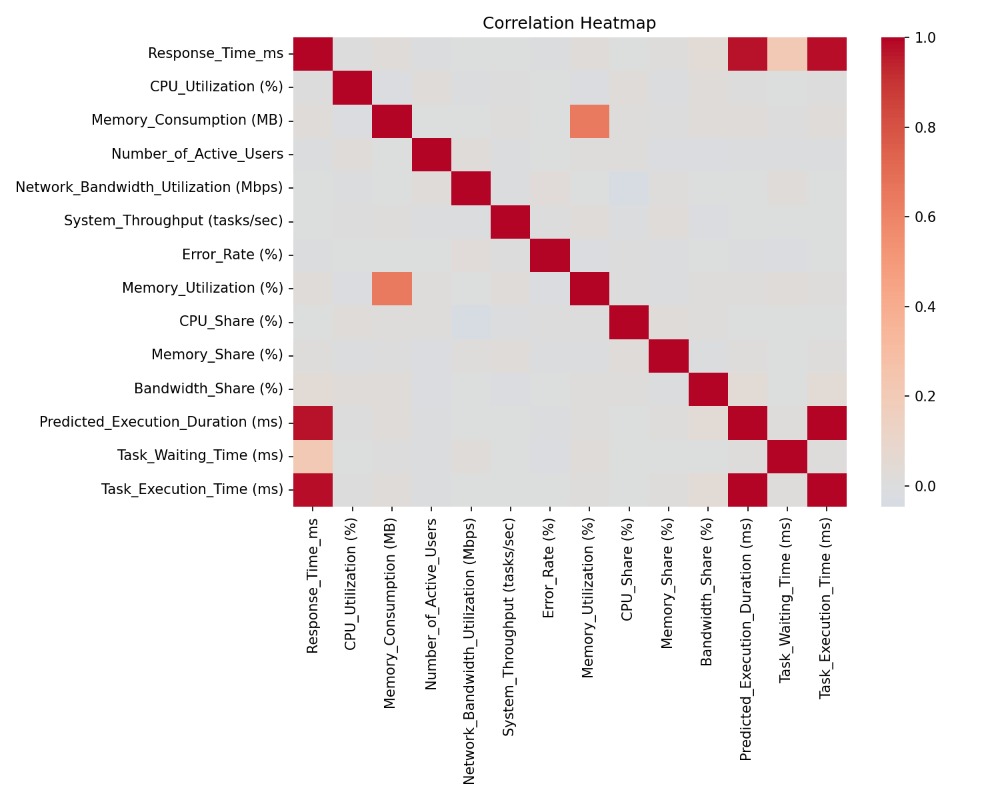
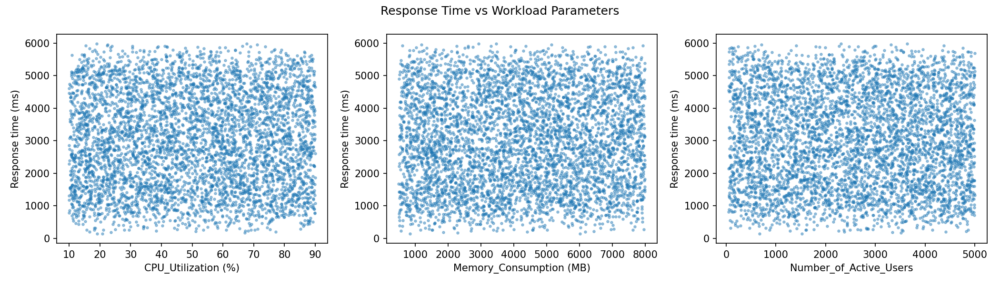
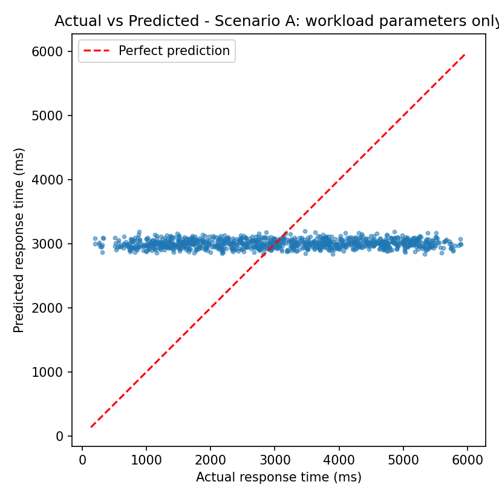
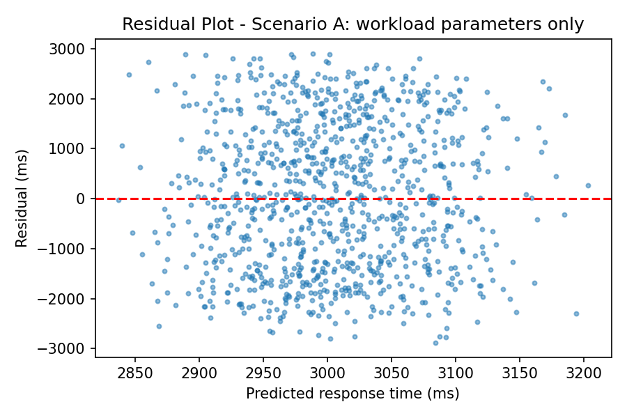
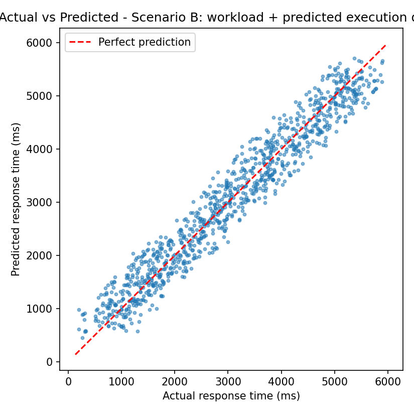
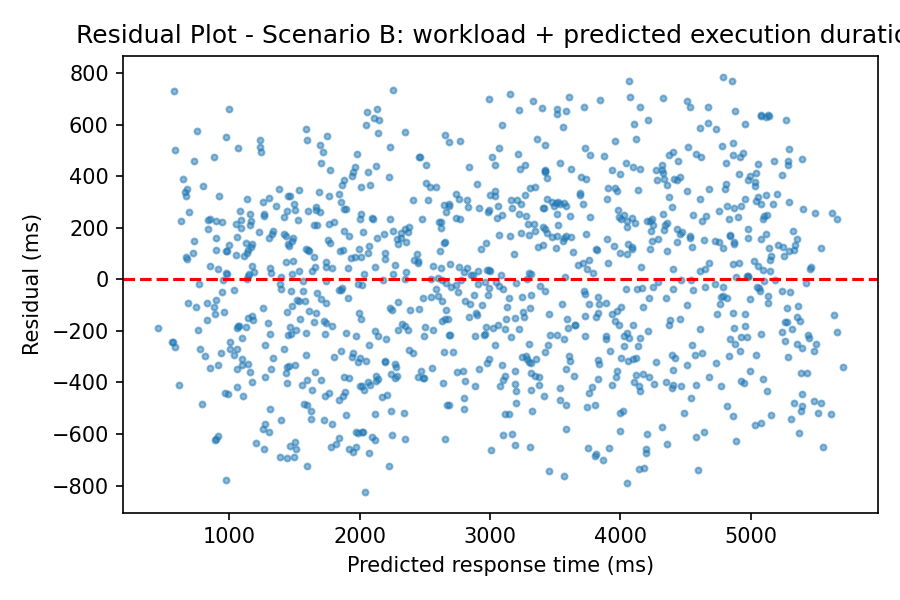

Multiple Linear Regression for Server Latency Forecasting
A statistical performance modeling study analyzing cloud workload parameters (CPU, memory, concurrent users, throughput) and execution queue dynamics. Demonstrates why workload metrics alone yield R² = 0.002, whereas incorporating predicted task execution duration achieves R² = 0.944 with verified homoscedasticity.
Workload Input Parameters
Live Calculation
Within SLA (Optimal QoS)
System Action: Normal request routing. Server resource utilization is within safe operational limits.
Model Comparison (Click card to select active model)
Scenario A (Workload Only)
3,016 ms
R² = 0.002 • RMSE = 1,446.7 ms
Scenario B (+ Predicted Duration)
2,985 ms
R² = 0.944 • RMSE = 344.6 ms
Simple LR (Queue Wait Only)
3,012 ms
R² = 0.001 • RMSE = 1,447.2 ms
Ordinary Least Squares (OLS) Regression & Hypothesis Testing
Significance Level α = 0.05
Coefficient of Determination (R²)
0.002
Adjusted R² = 0.000
Root Mean Squared Error (RMSE)
1,446.7 ms
5-Fold Cross-Validated
Mean Absolute Error (MAE)
1,215.3 ms
Average Residual Magnitude
Model F-Statistic
1.05
p-value = 0.398 (Fail to reject H₀)
| Predictor Parameter (Xⱼ) | Regression Coef (βⱼ) | Standard Error (SE) | t-Statistic | p-Value (P > |t|) | 95% Confidence Interval | Significance |
|---|
Statistical Visualizations & Residual Diagnostics
Interactive Canvas ChartsActual vs Predicted Latency (OLS Regression)
● Live: 3,016 ms
● A (Workload)
● B (+Duration)
-- Ideal y = x
Residual Plot e = y - ŷ (Homoscedasticity Analysis)
Residual: +15 ms
Zero-Mean Baseline
Workload Pearson Correlation Matrix
Driver: Queue Wait
Response Time Distribution & Normal Overlay
Percentile: 50%
Gaussian PDF
Python Diagnostic Figures (outputs/)
Generated by server_response_time_regression.py

00_master_regression_dashboard.png — Master 2x2 Diagnostic Figure
Full diagnostic figure generated by python script: Response Time Distribution + 2D Correlation Heatmap + Actual vs Predicted Latency + Residual Scatter.

01_response_time_distribution.png
Continuous probability density function overlaying 40-bin response time histogram.

02_correlation_heatmap.png
Bivariate Pearson r correlation matrix identifying collinearity and strongest predictors.

03_scatter_workload.png
Trellis scatter array demonstrating linearity and variance across compute parameters.

A_actual_vs_predicted.png
Scenario A regression scatter: Blue dots illustrate flat prediction line without execution duration.

A_residuals.png
Residual error spread for Scenario A, diagnosing variance dispersion around zero.

B_actual_vs_predicted.png
Scenario B regression scatter: Green dots tightly clustered along ideal 45° diagonal.

B_residuals.png
Homoscedastic residual spread centered tightly on e = 0 with minimal standard error.